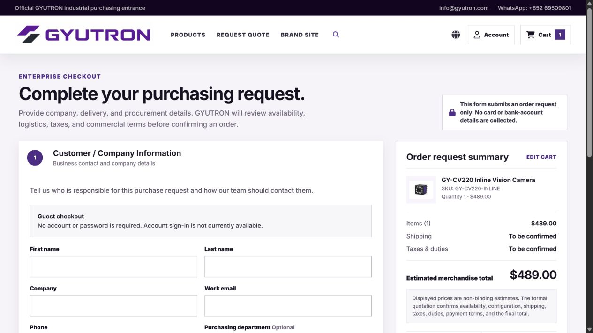
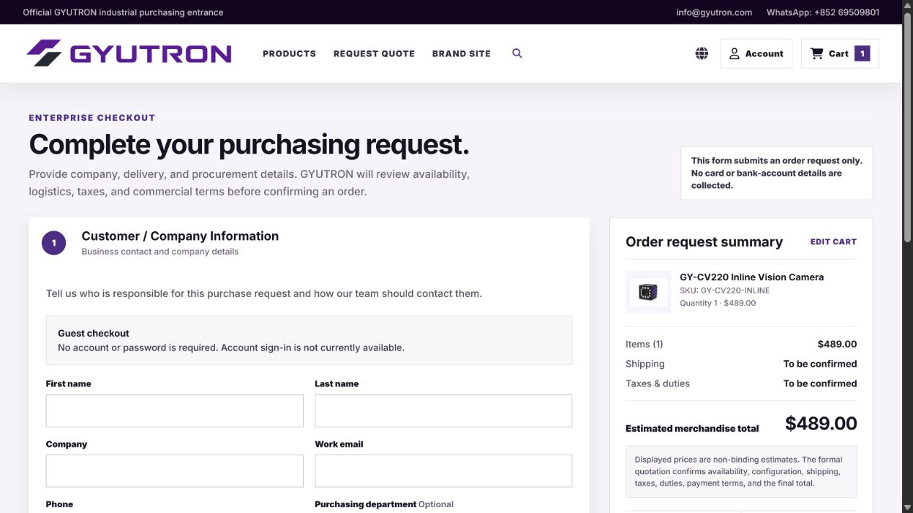

Decorative content icon removal
Same local pages and desktop viewport before and after. Functional navigation, search, cart, language, editing, disclosure, and error controls remain.
Brand site — Core capabilities
Shop — purchasing entry
Checkout — request flow

